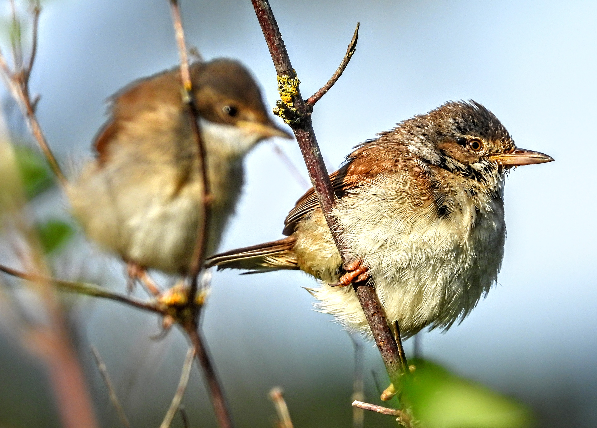

This is an unofficial website devoted the area I call the
Corunna Moor, and to promoting its beauty among local residents.
The area is the stretch of land bounded by Corunna Road and Corunna Grove from the
North, and Royal Aberdeen Golf Club and Don Mouth Crescent from the South.
The
picture on the left shows an image from google maps (click on the picture to
see a bigger version).
Several years ago there used to be buildings here belonging to Aberdeen College
or Gordon Barracks (I don't know). They were demolished in 2018. Since then the
nature has been reclaiming the land and it is now a home to many species of
plants, insects, birds and rodents. Occasionally visited by foxes (mostly in
winter) and deer that sometimes stay for a few days and popular with some
dog owners.
Let's take a walk...

The entrance to the moor is on the Corunna Road edge almost opposite to the entrance to
Gordon Barracks. It is blocked with three rocks. The panorama picture on the top of this
website is taken from that place. On your right you see a
rowan tree
and a
Tatar maple.
The latter has beautiful red samara in the summer.

On the southern edges there is group of 166
Douglas firs
forming a small forest. Some of them, like the one on the right,
are more than 40m high. The forest is very pleasant to walk in the
spring and winter, while in the summer the grass and weed take over and,
at least in the summer of 2022, there are a lot of
ticks.
On its border
with the Royal Aberdeen Golf Course, is a line of
whitebeams.
They are the same trees that make the beautiful alley on Corunna Road.

While walking along the forest you will see or hear
crows,
jackdaws,
magpies
(photo on the left),
oystercatchers,
pigeons,
robins,
rooks
and other birds. When there is no one walking the magpies often feed on the
ground next to the forest. When you approach they disappear in the forest
essentially without a trace. On the one hand, they seem to be everywhere, on
the other, I found it very hard to take a photo of one. Even when present they
are constantly on the move.
In the southern corner, the crows and magpies can
become very noisy. Half way through the main part of the forest there is a
rock where you can sit and look at the moor from the other perspective.


When you sit on the rock the view just in front of you is not very pretty.
Just an old concrete floor and, on the right, the ground covered in crushed
concrete and stones slowly taken over by grass and even new trees which gives a
hope for an expansion of the forest. Looking further we see that most of the
area is covered by
gorse.
It is amazing how quickly the gorse took over the area after the buildings were
demolished. Although green for most of the year, it gives a few weeks
spectacle of yellow flowers in the spring.


Going further we can continue along the forest and turn left and go along the fence
on the Corunna Grove border. However, recently the gorse overgrew the path
and it is not straight- forward to get through.

Alternatively, we can go across the
concrete floor to the remains of a small road. After the rain, there are ponds of
water forming there.
We are now next to a group of bushes comprised mostly of
cotoneaster
and
buddleia.
In the summer this place is full of
bumblebees
and you can
hear their noise from a distance as they feed on the cotoneaster flowers.
Sparrows
nest there and possibly some other small birds, like
common whitethroat
or
goldfinch
which I saw there and managed to take pictures.


Next to the shrubs is a narrow path through the gorse that leads to
the hedges around the gardens of the houses on Corunna Road. Next to
the south-west edge of the hedge is a bench with yet another
view on the moor and forest. Apart from the gorse, this part of the moor
is covered in the summer by beautiful
grass (probably
alpine reedgrass)
and by
creeping thistle.
By continuing along the Corunna Road edge we pass by several buddleia
trees and finish at the entrance where we started.
More animals...


Apart from swarms of bumblebees in the cotoneaster bush, the last part of
the walk is good for spotting insects like bees, butterflies or moths.
The picture on the left shows a
garden tiger moth
and on the right are a pair of
meadow browns
and
dark green fritillary
on a thistle.
When you walk on the moor you never see mice but they are nearly everywhere.
There are several species of them ranging from very small brown with long noses to
large grey ones. On the other hand, it is not uncommon to see a
hedgehog
in the evening.
The easiest place to see it is the L-shaped concrete pavement going along the
southern edges of the grass and gorse part. Relatively frequently I can see birds
of prey, like
sparrowhawks
and
kestrels.

When you sit on the bench mentioned above you will see that it is covered with
tiny scratches. Essentially, the whole layer of wood has been removed. It turns
out that
wasps
did it. They mix the wood with their saliva and use the substance
to build a nest (right).
Of course, there are many more animals living or visiting the moor and countlessly
many more species of plants. I will try to provide more information as I learn.
The moor rangers...

There are at least four cats regularly patrolling the moor. Mortka and Małysz
(right) are my cats and they often walk around the moor with me or with my
wife. That is why I discovered the beauty of this place. Raskolnikov (not a
real name; left) is another frequent visitor and (s)he probably lives in the
last house on Links Road. Behemoth, a large and aggressive male visits
occasionally and I suspect that it may be a feral cat. I saw a few more cats
but they are not as frequent visitors as the four ones mentioned above.
Future...
In
Aberdeen Local Development Plan 2017 Written Statement,
Appendix 2 - Opportunity Sites on page 101
the area is known Aberdeen College Gordon Centre,
has the code OP7 and it is classified as
mixed use. In addition the document says:
Location suitable for residential or mixed
use development. The woodland on site,
particularly along the site’s boundaries,
should be retained.
I haven't found more recent documents that mention the area.
The sentence about retaining the woodland is reassuring. However, it
would be nice to keep the unique and natural character of the moor as
a whole.

{kind=link}
{kind=link}
{kind=link}
{kind=link}
{kind=link}
{kind=link}
{kind=link}
{kind=link}
{kind=link}
{kind=link}
{kind=link}